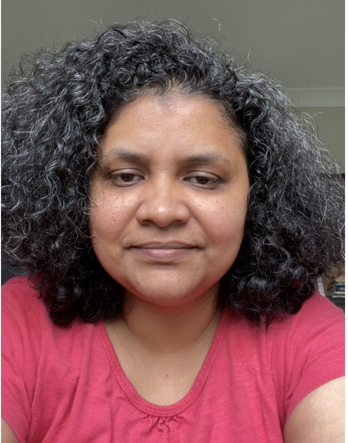

Cell: 0474977457(Sydney, Australia) / Email: aswinikrishnan.b@gmail.com Work Status: Australian Citizen

CAREER SUMMARY
Result oriented software professional with 20 years of experience working in complex, project-based environments in multiple platforms and technologies including cloud software. Multifaceted experience in QA software testing, software development and user-acceptance testing. International, multicultural work experience having worked in Australia and with stake holders across India, US and China.
Areas of Expertise include:
Excellent awareness of testing processes including requirement gathering, designing of test specifications, defect analysis.
Analyze Design and Develop complex tools for automating testing procedures using JUnit, TestNG.
Extensive knowledge on automating tests using REST API Test Framework.
Strong programming skills in Core Java.
Strong scripting skills in Shell scripting, Python and Perl.
Proficient in software processes like SDLC methodologies including agile.
Worked extensively on both of Oracle’s IaaS offerings i.e., OCI-C and OCI.
Responsible for designing, implementing and supporting of Oracle PaaS solutions with excellent knowledge on Oracle PaaS Service Manager and Oracle Cloud Stack Manager.
Good knowledge on Oracle’s Cloud Stack templates and Service Blueprints.
Worked on building the CICD pipeline using Jenkins to deliver cloud product to production.
Experience:
Role
Organisation
Month/Year
Test Analyst
DXC Red Rocks for eHealth NSW
April 2019 till April 2020
Principal Member of Technical Staff
Oracle India Pvt. Ltd.
Sept 2007 till Jan 2019
Project Engineer
Wipro Technologies
August 2004 till Sept 2007
Test Analyst
April 2019 till April 2020
eHealth NSW
Test Analyst:
eHealth NSW uses information technology to connect people, data and systems to improve patient-centred care in NSW. We partner with health agencies and industry to provide a digitally enabled and integrated health system for patients, clinicians and the NSW community.
IMS+ application (April 2019 – Till April 2020)
Application is an Incident management tool for Health. It is used for capturing Incidents, Feedback and if required events can be investigated and safety lessons learned along with recommendations, implementing policies and assessing compliance to standards.
Roles and responsibilities:
Actively collaborating with developers and business stakeholders to clarify requirements, especially in terms of testability and consistency.
Analyzing system requirements and developing detailed test plans for system testing. This included taking complete ownership of the Primary Capture module of the application which is the Incident Module.
Converting the user stories (agile methodology requirements documents) and design documentation into test design products: test scenarios, test cases, and test scripts.
Actively working on testing new releases and coordinate with the development team to fix bugs found during integration testing.
Involving in daily stand-up meetings to update testing progress to Product Management.
Actively participating in Defect Review Group meetings to discuss defects with Developers and Business for priority and urgency.
Defect reporting and tracking to closure by closely liaising with the development teams using ServiceNow Test Management tool.
Participating proactively in identifying risks at the end of the test cycle, team retrospectives post release, suggesting and implementing improvements.
Assisting in analyzing, documenting and communicating test results at the end of the test cycle for the Release Test Summary Reports
Assist in planning, coordinate and manage UAT activities including assisting users for UAT & closure process like preparing the UAT Test Summary reports.
Additionally, participated in the UAT testing for ServiceNow release.